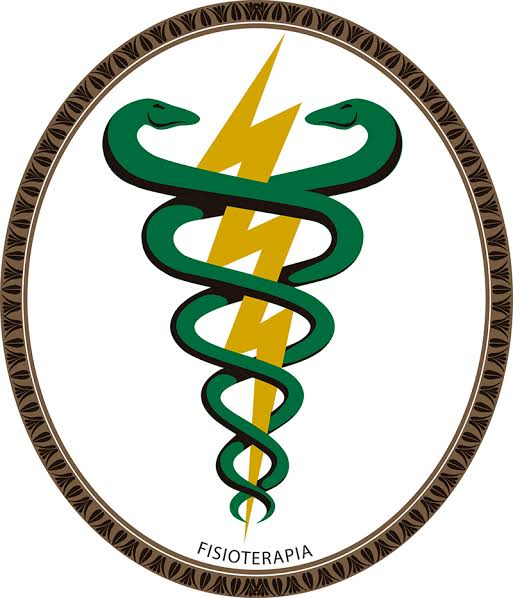

Química é a ciência que estuda a composição, estrutura, propriedades da matéria, as mudanças sofridas por ela durante as reações químicas e sua relação com a energia. O desenvolvimento desta ciência teve como base as observações de experimentos, sendo portanto, considerada uma ciência experimental.
A enfermagem é uma ciência cujo objetivo é a implantação do tratamento de doenças e o cuidado ao ser humano, individualmente, na família ou em comunidade de modo integral e holístico. Florence Nightingale, é mundialmente conhecida como precursora da profissão.

É uma ciência da Saúde que estuda, previne e trata os distúrbios cinéticos funcionais intercorrentes em órgãos e sistemas do corpo humano, gerados por alterações genéticas, por traumas e por doenças adquiridas.